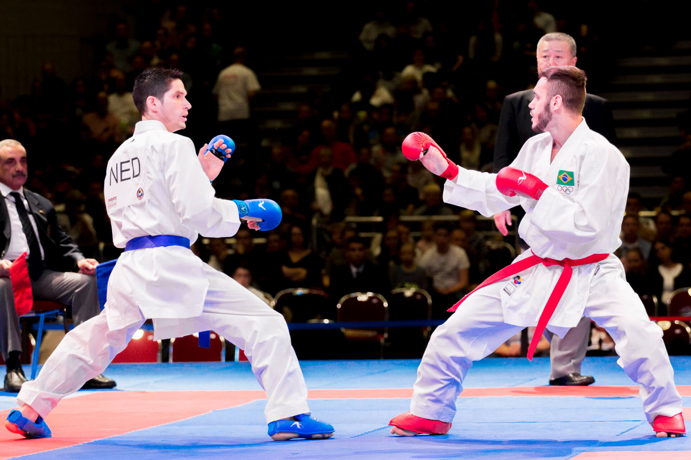
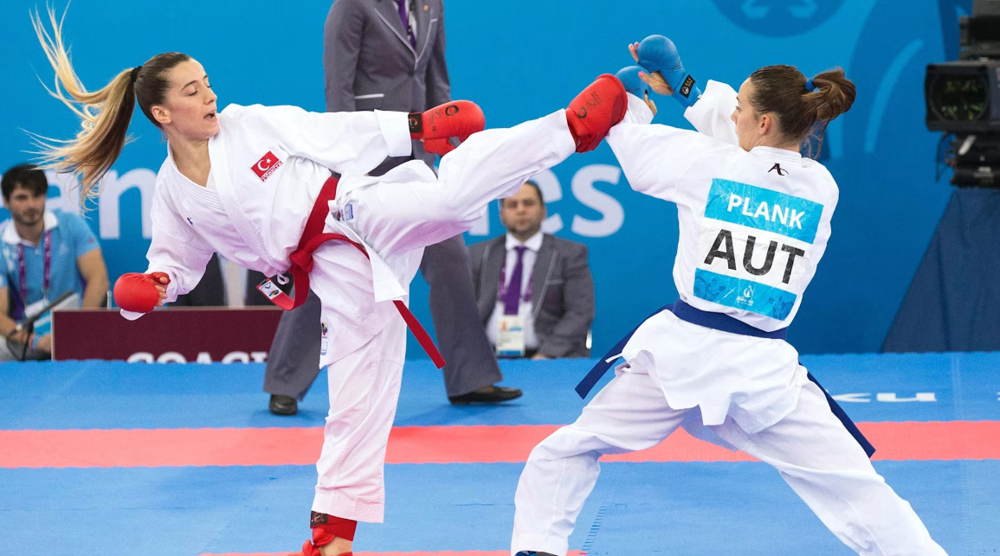

O que é o Karatê?
O karatê é uma arte marcial japonesa que utiliza técnicas de golpes com as mãos, pés, cotovelos e joelhos, bem como bloqueios e agarrões, para desenvolver capacidades físicas e mentais.
É um esporte de combate que pode ser praticado como uma forma de defesa pessoal ou uma forma de arte, por isso, também é uma arte marcial.
O esporte requer muito treinamento e disciplina, tanto do corpo quanto da mente, para atingir a perfeição do caráter, um dos seus principais objetivos.

Origem e História
A história do karatê tem início em Okinawa, um arquipélago que hoje faz parte do Japão, mas que durante muito tempo teve forte influência cultural da China. Foi nesse contexto que técnicas de combate chinesas começaram a se fundir com os métodos de luta locais.
Essas práticas se intensificaram após a proibição do uso de armas em Okinawa, tanto por governantes locais quanto pelos invasores japoneses. Os moradores, então, passaram a desenvolver técnicas de autodefesa usando apenas o próprio corpo como arma e foi assim que nasceram os primeiros movimentos do karatê.
Originalmente conhecido como Tode (mãos chinesas), o karatê passou por diversas transformações até se tornar o que conhecemos hoje. Foi Gichin Funakoshi, considerado o “pai do karatê moderno”, quem levou a arte de Okinawa para o Japão continental. Ele também foi o responsável por transformar o siginificado do Karate para “mãos vazias”, representando não apenas o combate sem armas, mas também um caminho de crescimento interior.
O karatê chegou ao Brasil por volta da década de 1950, trazido principalmente por imigrantes japoneses que se instalaram em São Paulo e no Paraná. Um dos grandes nomes dessa fase inicial foi o mestre Sadamu Uriu, considerado o introdutor oficial do estilo Shotokan no país.

Regras do karatê
A área de competição do karatê é um tapete quadrado com 8 metros de cada lado que se chama tatami. O equipamento usado pelos atletas de karatê consiste no uso do quimono, cujo nome correto é karate-gi, na cor branca, e uma faixa na cintura. Por baixo do quimono, pode ser usada uma blusa totalmente branca, sem qualquer tipo de desenho.
As faixas representam a graduação dos atletas e podem ter 8 cores diferentes, iniciando pela branca e terminando com a preta, nesta ordem: branca, amarela, vermelha, laranja, verde, roxa, marrom e preta. Após alcançar a faixa preta, a classificação continua com a palavra “dan”, que significa “grau”, ou seja, a primeira faixa preta é a de 1º dan, a segunda é a 2º dan, a terceira é a 3º dan.
Nas competições oficiais, não é permitido usar as faixas de graduação. Nesses casos, um atleta usa uma faixa azul e o outro, uma faixa vermelha. Os seguintes equipamentos de proteção são obrigatórios nas competições: luvas de combate, protetor de dentes, protetor de tronco - com protetor de peito para as atletas, caneleiras e protetores de pé.